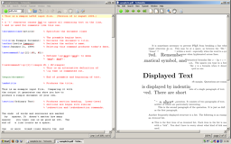

TeXworks on GNU/Linux (Ubuntu)
TeXworks on Windows XP

TeXworks on Mac OS X
Jonathan Kew
The TeXworks project is an effort to build a simple TeX front-end program (working environment) that will be available for all today’s major desktop operating systems—in particular, MS Windows (XP and Vista), typical GNU/Linux distros and other X11-based systems, and Mac OS X. It is deliberately modeled on Dick Koch’s award-winning TeXShop for Mac OS X, which is credited with a resurgence of TeX usage on the Mac platform.
To provide a similar experience across all systems, TeXworks is based on cross-platform, open source tools and libraries. The Qt toolkit was chosen for the quality of its cross-platform user interface capabilities, with native “look and feel” on each platform being a realistic target. Qt also provides a rich application framework, facilitating the relatively rapid development of a usable product.
The normal TeXworks workflow is PDF-centric, using pdfTeX and XeTeX as typesetting engines and generating PDF documents as the default formatted output. Although it is possible to configure a processing path based on DVI, newcomers to the TeX world need not be concerned with DVI at all, but can generally treat TeX as a system that goes directly from marked-up text files to ready-to-use PDF documents.
TeXworks includes an integrated PDF viewer, based on the Poppler library, so there is no need to switch to an external program such as Acrobat, xpdf, etc., to view the typeset output. The integrated viewer also supports source/preview synchronization (e.g., control-click within the source text to locate the corresponding position in the PDF, and vice versa). This capability is based on the new “SyncTeX” feature developed by Jérôme Laurens, and supported by both the pdfTeX and XeTeX programs in TeX Live and other current releases.
There is a mailing list available for discussion of any topics related to the TeXworks project. You can search the list archives online.
TeXworks development is currently hosted at Google Code; this is where most resources including downloads of both source code and precompiled binaries can be found.
Note that TeX Live 2009 and MiKTeX 2.8 both include TeXworks for MS Windows, and the MacTeX 2009 release (corresponding to TeX Live 2009) includes TeXworks for Mac OS X. For Linux, there are prepackaged binaries available for Ubuntu; packages for other distributions may also be available, or are currently in preparation.
A TeXworks page by Alain Delmotte has the TeXworks manual in PDF as well as HTML format, as well as some Windows binaries with experimental features not in the current stable release.
A few screenshots are available showing the TeXworks 0.2 release running on the three major supported operating systems (click images to open full-size versions):
TeXworks on GNU/Linux (Ubuntu) |
 TeXworks on Windows XP |
TeXworks on Mac OS X |
Presentations introducing TeXworks have been given at recent TeX conferences. A video recording from the TUG 2008 conference is now available, as well as an earlier one from BachoTeX 2008, thanks to River Valley Technologies. The PDF slides (1.5MB) used for the TUG 2008 presentation are also available.
Numerous development snapshots were made available during the initial evolution of TeXworks, and feedback from those brave enough to use these experimental versions has been greatly appreciated!
This series marks the initial release of TeXworks as a stable product. It includes:
No new features or major code changes will be made in the 0.2.x series, but there may be new "point releases" as necessary to fix specific bugs.
After the release of the initial version, several major additional features are planned; some issues fairly high on the priority list include:
Some of these features, and perhaps others, will be implemented in the current development version (0.3.x), leading to a second release series designated 0.4 once a suitable set of features is considered stable.
I expect development priorities to be guided by user feedback as well as developer interest. The features mentioned here are some of the current ideas, but should not be interpreted as a fixed roadmap for future work.
TeXworks is a free and open source software project, and you are invited to participate; some suggested ways are listed below, but this is not exhaustive. Note that most of these items do not require a programmer! Many other skills are just as vital. Some ways to contribute:
The TeXworks project arose out of discussions at several recent TUG meetings, and initial development has been generously supported by TUG’s TeX development fund and its contributors, and by UK-TUG.
Special thanks to Karl Berry for his encouragement and support; to Dick Koch for showing us the potential of a clean, simple TeX environment for the average user; to Stefan Löffler for many valuable patches; to Alain Delmotte for writing a manual; and to many others who have contributed ideas, suggestions, translations, and patches.
$Date$